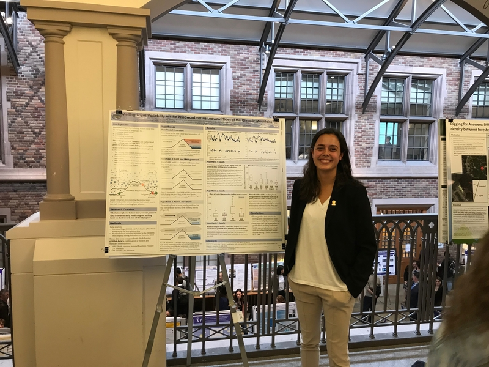

Mountain Hydrology Research
2017 - 2018

Project Summary
(Photo: UW Undergraduate Research Symposium poster presentation)
As a member of University of Washington's Mountain Hydrology Research Group, I investigated snow accumulation patterns in Washington's Olympic Mountains. I primarily investigated disparities in the rain-snow level on the windward versus leeward slopes of the Olympics which may be used to inform water resources and flood management decisions.
Through this research I was awarded a Mary Gates Research Scholarship and worked in collaboration with UW's Atmospheric Science Department. Much of the data analyzed was provided by OLYMPEX, a NASA/GPM ground validation field campaign.